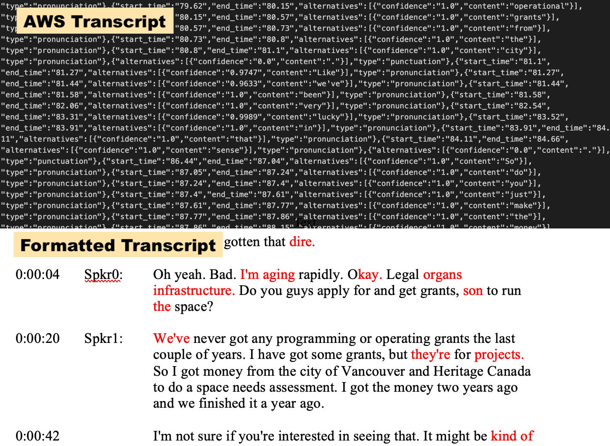

ZipScript uses AWS Transcribe to turn audio files into custom formatted human-readable Word documents. Built using Django, ZipScript provides a simple web interface to upload audio to Amazon and set parameters for transcription. Upon completion, transcripts may be instantly downloaded in either the original .json provided by Amazon, or converted into one of several readable, formatted Word documents.

In this example, the finished transcript is colour coded to aid a human editor in identifying low-confidence words that can be manually confirmed or corrected. Redundant or unnecessary utterances (filler words and “ums” and “ahs”) are optionally removed to improve readability. Timecode is noted in a useful, readable way - in this case, at each new speaker and then every 20-40 seconds thereafter, adjusted to avoid occuring mid-sentence.
Machine transcripts still require heavy human editing to achieve a high quality script. As a result, ZipScript is meant to eventually feed into a custom-built editor that will allow a proofreader to correct errors in the transcript much more quickly than when using a standard word processor. The app will then create a properly formatted doc using the corrected transcript. This combination of machine and human transcription allows for faster production of accurate transcripts at a lower cost, and opens the door to additional features, such as transcript formats that can create their own batch capture lists.
Django, Python, Bootstrap, Amazon Web Services


{kind=link}